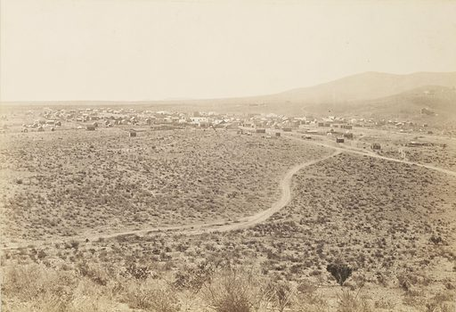

Welcome to Tombstone
Famous for its Wild West history, Tombstone, is a living testament to the Old West. With a storied past dating back to its founding in 1879, Tombstone was the site of the infamous Gunfight at the O.K. Corral, featuring Wyatt Earp and Doc Holiday.
| Population | Founding Year | Region | Classification | Average Income |
|---|---|---|---|---|
| 1,300 | 1879 | Southeastern Arizona | Rural | $36,000 |
-
Notable attractions in Tombstone:
- O.K. Corral
- Boot Hill Cemetery
- Bird Cage Theatre
-
What makes Tombstone unique:
- Its rich Wild West history
- Preserved 19th-century architecture
- Year-round living history presentations